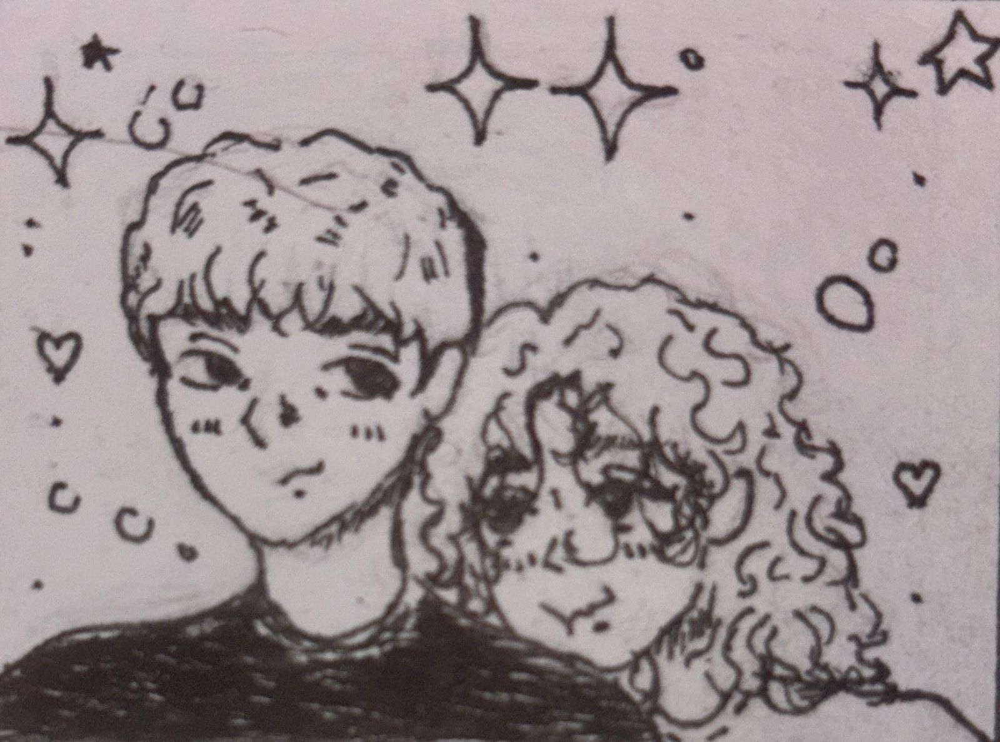

Спасибо тебе за время, за тёплые моменты, за всё, что между нами было.
Пусть у тебя всё будет хорошо. Будь счастлива.
И надеюсь, ты это прочитаешь. Не держи на меня зла за последнюю нашу встречу, я обманул тогда тебя специально. Хотел, чтобы ты меня возненавидела и смогла отпустить. Чтобы жила дальше.
Так живи.
Любовь моя.
